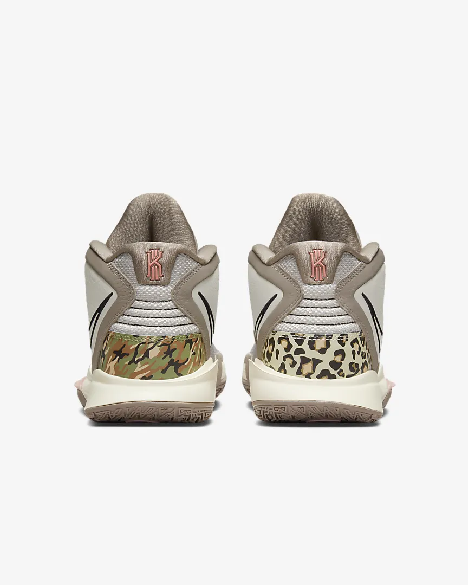
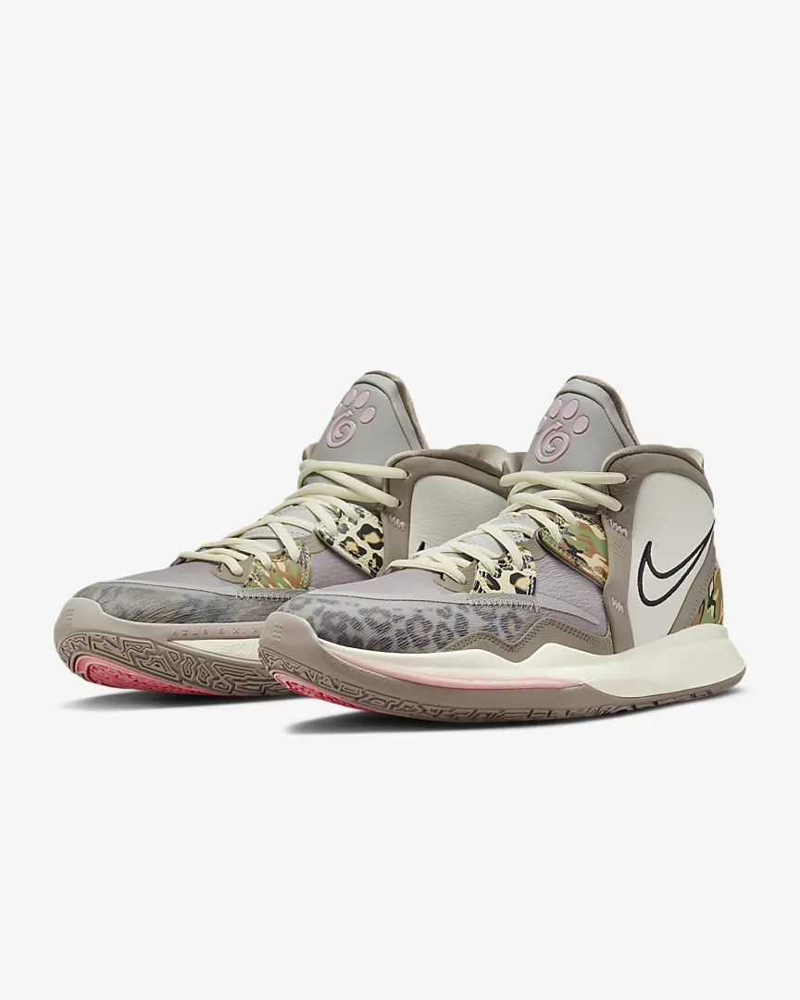

|

|

|
The Kyrie Infinity provides a tight custom fit, enhanced responsiveness in the forefoot and traction up the sides, allowing players to accelerate and decelerate on demand and take advantage of the separation they create.
Colour Shown: Light Iron Ore/Moon Fossil/Coconut Milk/Black
Translucent, micro-engineered upper material is lightweight and breathable.
Plush, padded collar is partially separated around the heel for snug support around the Achilles tendon.
Extra-durable rubber outsole is designed to play on outdoor courts.
Colour Shown: Light Iron Ore/Moon Fossil/Coconut Milk/Black
|